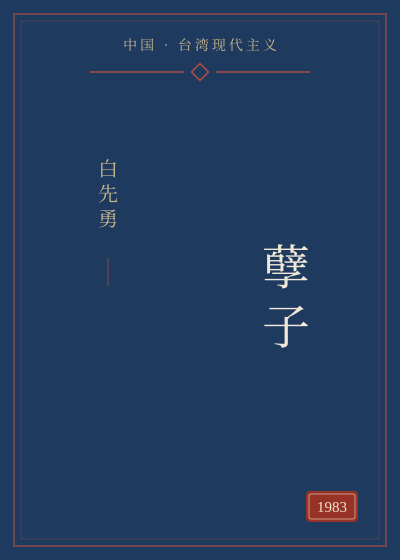
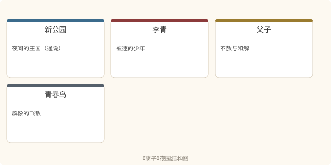

孽子
一、基本信息
| 作者 | 白先勇 |
|---|---|
| 成书/出版 | 出版年份待核（作者页 B208 存目：孽子——1983年说通说待核） [来源缺失 B208] |
| 国别/地区 | 中国 |
| 时代 | 现当代 · 台湾现代主义 |
| 体裁 | 长篇小说 |
| 语言 | 汉语（白话） |

《孽子》夜园结构图（主题·结构图）
二、创作背景
作者页（B208）：白先勇 major_works 载'孽子'（B208 作者页定位，详见 taibeiren 条核对）。
题材（通说待核）：台北新公园夜间的'青春鸟'群落——李青的父与子。
三、内容脉络
李青被学校开除、被父亲逐出家门——新公园'王国'的夜游者（通说待核）。
父子线：'父亲'与'孽子'的双重不赦（通说待核）。
四、主要人物表
| 人物 | 身份 | 说明 |
|---|---|---|
| 李青 | 少年 | 被逐者（通说待核） |
| 阿凤 | '传说' | （通说待核） |
五、主题与艺术特点
- 父与子的和解之难（通说待核）。
- 边缘群体的'王国'（通说）。
- '孽'：不赦与悲悯（书名通说）。
六、影响与评论
- 作者页：白先勇代表作（B208 作者页口径）。
[来源缺失 B208] - 华语第一部以同性恋题材立目的长篇之一（通说待核）。
[来源缺失 B208]
七、阅读建议
难点
- '新公园'的空间与暗语。
- 父子伦理的重负。
- 《孽子》（白先勇作品集，通说待核）。
先《台北人》后本作。
八、待核实
- 1983年出版（《现代文学》连载说）核对。
- 李青/阿凤人名核对。
- 电视剧与舞台剧改编待核。
本页主要来源
- [来源缺失 B208]
白先勇的其他收录作品：台北人